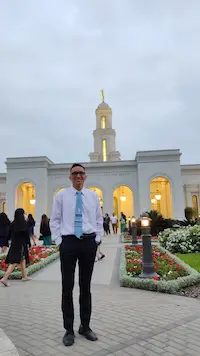

Bruce Meléndez | WDD 130
Hello! my name is Bruce Meléndez and I from Cajamarca, Peru. I have been a member of The Church of Jesus Christ of Latter-day Saints since I was 13 years old. I served a mission in the Peru Lima West Mission. I enjoy doing many things, including riding bicycles, driving cars, spending time with friends and family, watching movies, and I also like anime. I have a hobby that is being able to take photographs of landscapes, I have had the opportunity to travel to some places in Peru and I have not missed the opportunity to take as many photos as possible. I am currently 21 years old and every day I learn about life and its challenges.